YOUR SMILE. OUR PASSION.
Advanced Dental Care for a Healthy, Confident You
Comprehensive, personalized dental care for children, adults and seniors — from preventive dentistry and painless root canal treatment to dental implants, braces, clear aligners and smile makeovers.
LEAD DENTIST
Dr. Rupali Karande
Compassionate care. Clear treatment planning. Beautiful, healthy smiles.
OUR DENTAL SPACE
A Calm, Modern Dental Clinic Near Amanora & Magarpatta
A bright, comfortable and technology-focused visual preview of the experience we aim to create for every dental visit.
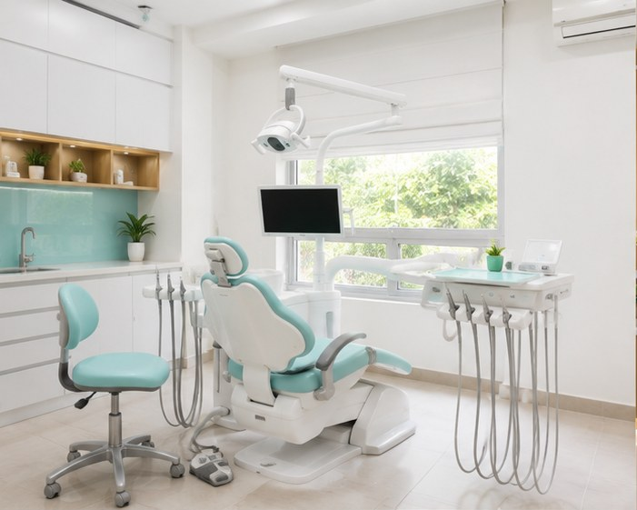
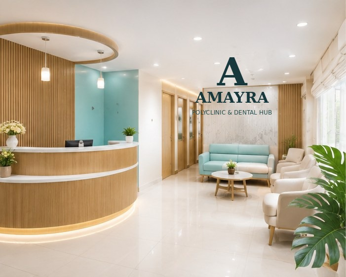
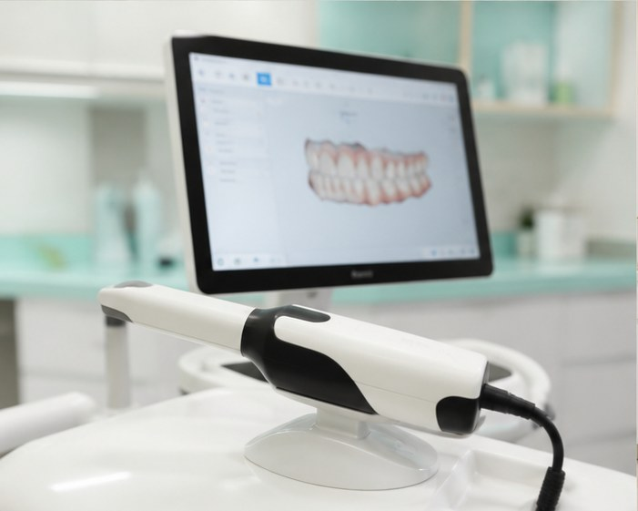

DENTAL TREATMENTS
Complete Dental Care Under One Roof
From routine preventive care to complex restorative and cosmetic dentistry, find the right treatment for your smile.
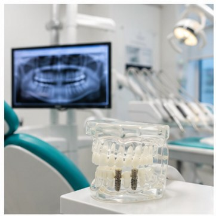
Dental Implants
Modern tooth-replacement options for missing teeth.
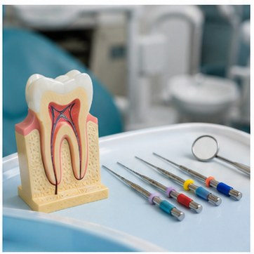
Root Canal Treatment
Tooth-saving care for infection, decay and dental pain.
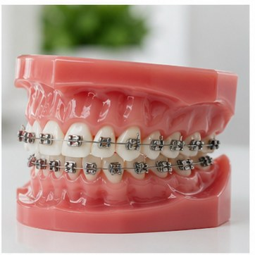
Braces & Orthodontics
Improve tooth alignment, crowding and bite problems.
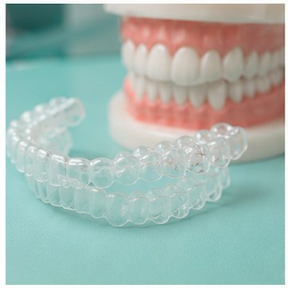
Clear Aligners
A discreet approach to straighter teeth.
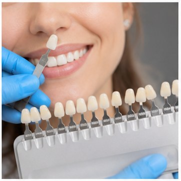
Cosmetic Dentistry
Thoughtful options to enhance your smile.
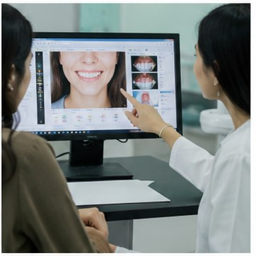
Smile Makeover
Personalized planning for a confident smile.
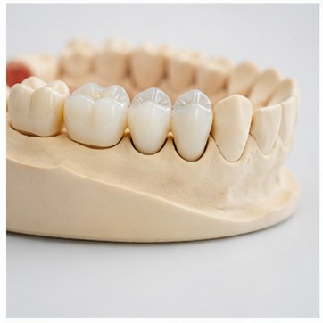
Crowns & Bridges
Restore damaged teeth and replace missing teeth.
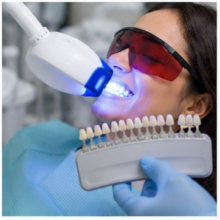
Teeth Whitening
Professional options for a brighter smile.
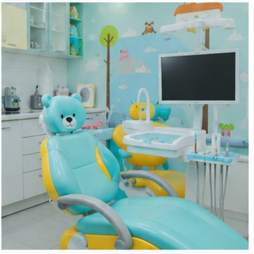
Kids Dentistry
Preventive and restorative dental care for children.
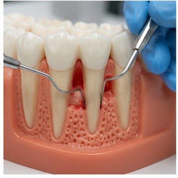
Gum Treatment
Care for bleeding gums and periodontal problems.

Wisdom Tooth Removal
Assessment and treatment for troublesome wisdom teeth.
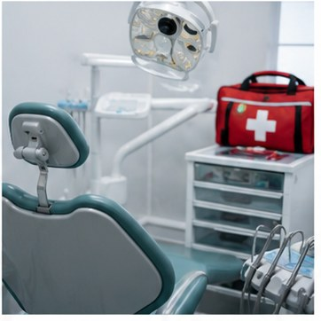
Emergency Dentistry
Prompt dental assessment for urgent problems.
LOCAL DENTAL CARE
Your Dental Clinic Near Amanora & Magarpatta
Looking for a dentist near Amanora Park Town or Magarpatta City? Amayra Polyclinic & Dental Hub is conveniently located in Pune 411028 for patients seeking comprehensive dental care close to home, work and family.
Our broader service area includes Hadapsar and surrounding Pune neighbourhoods, while Amanora and Magarpatta remain central to our local identity.
THE AMAYRA APPROACH
Dentistry With a Personal Touch
Good dental care starts with listening, accurate diagnosis and clear communication.
Listen
Understand your concerns, goals and expectations.
Diagnose
Assess the underlying dental problem carefully.
Explain
Discuss appropriate treatment options clearly.
Treat
Deliver personalized, evidence-based dental care.
Maintain
Help you protect your oral health long term.
DENTAL PROBLEMS
Have a Dental Problem? Start Here.
YOUR DENTAL CARE TEAM
Meet the Dentists at Amayra
Our doctor profiles will explain qualifications, clinical interests, experience, treatment focus and approach to patient care.
Meet Our DentistsLEAD DENTIST
Dr. Rupali Karande
Meet Dr. Rupali Karande and explore her dental care approach, treatment focus and patient-first philosophy.
View Dr. Rupali Karande profile →TRANSPARENT INFORMATION
Dental Treatment Costs in Pune
We will publish clear, treatment-specific cost guidance using Amayra's actual fees, with an explanation of the factors that can change the final cost.
ABOUT AMAYRA
A Patient-Centred Dental Clinic Near Amanora & Magarpatta
Learn more about Amayra Polyclinic & Dental Hub, our approach to diagnosis and treatment planning, and the dental care we provide in Pune 411028.
About Amayra →BOOK YOUR VISIT
Choose Your Preferred Appointment Method
At Amayra Polyclinic & Dental Hub, you can book your dental appointment by WhatsApp, phone or appointment form.
Appointment Request Form
Fill in your details and tap submit. Your request will open in WhatsApp so our team can respond.
READY TO GET STARTED?
Your Smile Deserves Thoughtful Dental Care.
Book a consultation at Amayra Polyclinic & Dental Hub near Amanora and Magarpatta, Pune.
FAQ
Frequently Asked Questions
Where is Amayra Polyclinic & Dental Hub located?
Amayra is located in Pune 411028, conveniently positioned near Amanora Park Town and Magarpatta City, with Hadapsar as the broader local area.
What dental treatments are available?
Amayra provides a broad range of dental services including preventive, restorative, endodontic, orthodontic, cosmetic, implant and pediatric dentistry.
How can I book a dental appointment?
You can book by WhatsApp, phone or the appointment request form on our website. Our team will confirm availability and appointment details.
DENTAL EDUCATION
Learn Before You Decide
Practical dental education from Amayra to help you understand symptoms, treatment options, prevention and questions to discuss with your dentist.
Dental Implants: A Patient Guide
Understand candidacy, planning, healing and tooth-replacement options.
GUIDERoot Canal Treatment: What to Expect
Learn about symptoms, diagnosis, treatment and restoration.
ORTHODONTICSBraces vs Clear Aligners
Key factors to discuss when choosing an orthodontic approach.
KIDSYour Child's First Dental Visit
Simple ways parents can prepare children for a positive visit.
DENTAL COST GUIDE
Dental Treatment Cost in Pune
Understand what influences the cost of implants, RCT, braces, aligners, crowns, fillings, wisdom tooth removal and other common treatments.
View Dental Treatment Cost Guide →